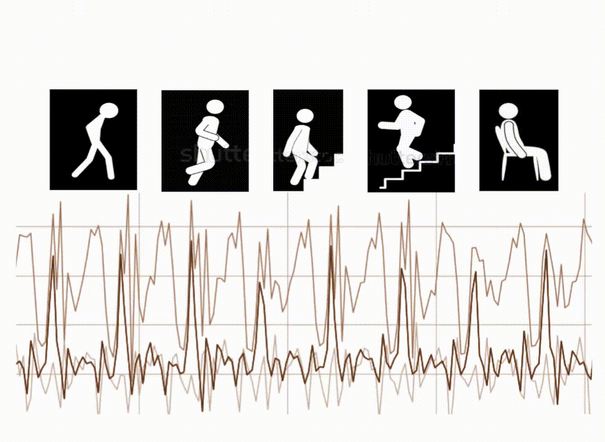

My name is Setare. I earned my PhD in 2021 from the University of Illinois at Urbana-Champaign. I then joined the Spatial Audio team at Meta Reality Labs Research as a research engineer. In this role, I served as a primary consultant, leveraging simulations, verification & validation (V&V) studies, and data analytics to inform spatial audio design in AR/VR devices. After an incredible three and a half years in this role, I transitioned to 4Sight Labs, a public safety startup focused on health monitoring for incarcerated individuals. As an applied scientist, I led efforts to ensure data collection quality and developed and deployed machine learning solutions using wearable physiological data for real-time inference.
I love learning new things and solving challenging problems. My work spans a broad range of topics, from wave propagation in metamaterials to acoustics, data analytics, and machine learning. I enjoy drawing connections between different fields of science and applying my skills to answer complex questions across disciplines.